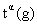
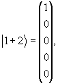
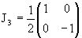

Прежде чем перейти к определению представления , нам понадобятся понятия изоморфизма и гомоморфизма.
Определение изоморфизма и гомоморфизма
Пусть заданы группы G и G'. Отображение f группы G в группу G' называется гомо- или изоморфизмом,
Eсли f(g1, g2) = f(g1) f(g2)
для любых g1, g2  G.
G.
Это означает, что если f отображает g1 в g1' и g2 в g2', то f также отображает g1g2 в g1'g2'.
При этом если f(e) отображает e в единичный элемент в G', то обратное, вообще говоря, несправедливо, а именно, e' из G' отображается обратным преобразованием f-1 в f-1(e'), именуемый ядром гомоморфизма.
Если ядро гомоморфизма суть e из G , то такой однозначный гомоморфизм называется изоморфизмом.
Определение представления
Пусть теперь заданы группа G и некоторое линейное пространство L. Представлением группы G в L называется отображение T, которое каждому элементу g в группе G ставит в соответствие линейный оператор T(g) в пространстве L так, что выполнены следующие условия:
(1) T(g1, g2) = T(g1)T(g2) для
всех g1, g2  G
G
(2) T(e) = 1, где 1 - единичный оператор в L.
Множество операторов T(g) гомоморфно группе G.
Линейное пространство L называется пространством представления, а операторы T(g) - операторами представления, причем они взаимно однозначно отображают L на L. Поэтому свойство (1) означает, что представление группы G в L есть гомоморфизм группы G в G* (группу всех линейных операторов в L, взаимно однозначно отображающих L в L). Если пространство L конечномерно, то его размерность называется размерностью представления T и обозначается nT. В этом случае, выбрав в пространстве L базис e1, e2, ..., en, можно задать операторы T(g) матрицами n-го порядка
(1.12) |
 t(e) = 1,
t(g1, g2) = t(g1) t(g2).
t(e) = 1,
t(g1, g2) = t(g1) t(g2).
Матрица t(g) называется матрицей
представления T. Если сама группа G состоит из
матриц фиксированного порядка, то одно из
простых представлений получается при T(g) = g
(тождественное или присоединенное (adjoint)
представление).
Такое тождественное представление уже
было нами рассмотрено выше и есть совокупность
ортогональных матриц 3 x 3 группы вращений O(3) в
3-мерном пространстве. А совокупность
антисимметричных матриц Ai, i = 1, 2, 3 есть
тождественное представление соответствующей
алгебры Ли. Понятно, что построив все
представления данной алгебры Ли, мы тем самым
построим все представления сответствующей
группы Ли ( с точностью до дискретных
преобразований ).
Преобразованием подобия T'(g) = A-1T(g)A
можно получить из T(g) представление T'(g) = g,
эквивалентное данному, но, скажем, более удобному
(например, матрицу представлений можно сделать
близкой к диагональной).
Определим сумму представлений
T(g) = T1(g) + T2(g) и скажем, что
представление неприводимо, если оно в такую
сумму не раскладывается ( для представлений
групп Ли такое определение вполне корректно).
Для отыскания и классификации
неприводимых представлений (НП) важное значение
имеет лемма Шура.
Лемма Шура: Пусть даны два НП  и группы G. Любая матрица В, такая
что B= B при всех g
 G либо равна 0 (если и
неэквивалентны), либо кратна единичной матрице
G либо равна 0 (если и
неэквивалентны), либо кратна единичной матрице  .
.
Следовательно, если существует B
 ,
коммутирующая со всеми матрицами НП T(g), то T(g)
приводимо. Действительно, если T(g) приводимо и
имеет вид
,
коммутирующая со всеми матрицами НП T(g), то T(g)
приводимо. Действительно, если T(g) приводимо и
имеет вид
(1.13) |
то
(1.14) |
и [T(g), B] = 0.
Для группы вращений сразу видно, что,
если [Ai, B] = 0, i = 1, 2, 3, то и [Ri, B] = 0,
т.е. нам достаточно найти матрицу B, коммутирующую
со всеми генераторами данного представления, а
собственные значения такого матричного
оператора B можно использовать для классификации
неприводимых представлений группы. Это
справедливо для любой группы Ли и ее алгебры.
Итак, мы хотим найти все неприводимые
конечномерные представления группы 3-мерных
вращений, что сводится к отысканию всех
неприводимых наборов эрмитовых матриц J1,2,3,
удовлетворяющих коммутационным соотношениям
[Ji,Jj] = iεijkJk. |
(1.15) |
Существует только один инвариант, составленный
из генераторов группы - ,
для которого , i = 1, 2, 3.
Следовательно, НП можно характеризовать
индексом j, связанным с собственным значением
оператора .
Чтобы пройти дальше, вернемся на
момент к определению представления. Операторы T(g)
действуют в линейном n - мерном пространстве Ln
и могут быть реализованы матрицами n x n, где n -
размерность представления. В этом линейном
пространстве определены n - мерные вектора  , причем любой вектор может
быть выражен в виде линейной комбинации n
произвольно выбранных линейно независимых
векторов
, причем любой вектор может
быть выражен в виде линейной комбинации n
произвольно выбранных линейно независимых
векторов
, .
Другими словами, пространство Ln натянуто на n линейно независимых векторов , образующих базис в Ln. Например, для группы вращений O(3) произвольный 3-вектор можно задать, как мы уже видели, с помощью базисных векторов
, , |
(1.16) |
как или = xex + yey + zez. А 3-мерное
представление (тождественное или
присоединенное представление в данном
случае) реализуется матрицами Ri, i = 1, 2, 3. Мы
сейчас представим его иначе.
Наша задача состоит в том, чтобы найти
матрицы Ji некоторой размерности n в базисе
из n линейно независимых векторов, причем нам
известны, во-первых, коммутационные соотношения
[Ji,Jj] = i ijkJk,
во-вторых, то, что НП можно характеризовать
собственным значением.
Кроме того, можно провести преобразование
подобия над матрицами (8, 6, 3), так чтобы одна из
матриц, J3, стала диагональной. Ее
диагональные элементы тогда будут собственными
значениями базисных векторов.
ijkJk,
во-вторых, то, что НП можно характеризовать
собственным значением.
Кроме того, можно провести преобразование
подобия над матрицами (8, 6, 3), так чтобы одна из
матриц, J3, стала диагональной. Ее
диагональные элементы тогда будут собственными
значениями базисных векторов.
|
(1.17) |
В нашем примере 3-мерного представления
, |
(1.18) |
, |
(1.19) |
. |
(1.20) |
В качестве базисных векторов выберем
|
(1.21) |
 ,
,
,
,
,
,при этом
J3|l + l> = |l + l>, J3|l 0> = 0|l 0>, J3|l - l> = -|l - l>. |
(1.22) |
В теории углового момента в 3-мерном
пространстве эти величины образуют базис
представления с полным моментом 1. Но они же могут
быть отождествлены с 3-вектором в любом, в том
числе гипотетическом пространстие. Например,
забегая вперед, заметим, что триплет  -мезонов в изотопическом
пространстве можно поместить в эти же базисные
векторы:
-мезонов в изотопическом
пространстве можно поместить в эти же базисные
векторы:
π+,
π-,
π0
|
(1.23) |
Подробно выпишем матрицы для J = 2, т.e., для представления размерности n = 2J + 1 = 5:
, |
(1.24) |
, |
(1.25) |
. |
(1.26) |
Как и следует ожидать, эти матрицы
удовлетворяют коммутационным соотношениям [Ji,Jj]
= i ijkJk, i, j, k = 1, 2, 3, т.е., реализуют представление
размерности 5 алгебры Ли, соответствующей
группе вращений O(3).
ijkJk, i, j, k = 1, 2, 3, т.е., реализуют представление
размерности 5 алгебры Ли, соответствующей
группе вращений O(3).
Базисные векторы выберем в виде:
 , , , |
(1.27) |
J3|2,+2> = +2|2,+2>, J3|2,+1> = +1|2,+1>, J3|2,0> = 0|2,0>, J3|2,-1> = -1|2,-1>, J3|2,-2> = -2|2,-2>.
А сейчас формально положим J = 1/2, хотя строго говоря мы этого делать не вправе. Полученные матрицы с точностью до фактора 1/2 суть известные матрицы Паули:
, . |
(1.28) |
Эти матрицы действуют в линейном пространстве, натянутом на два 2-мерных базисных вектора
|
(1.29) |
Возникает реальная возможность описать состояния со спином или изоспином 1/2. Но корректно это можно сделать только переходом к другой группе, которая содержит все представления группы вращений O(3) плюс представления, соответствующие состояниям с полуцелым спином ( или изоспином, для группы это все равно). Это группа SU(2).